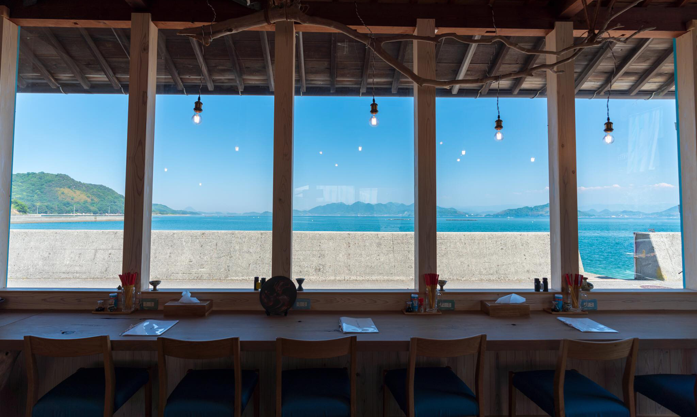
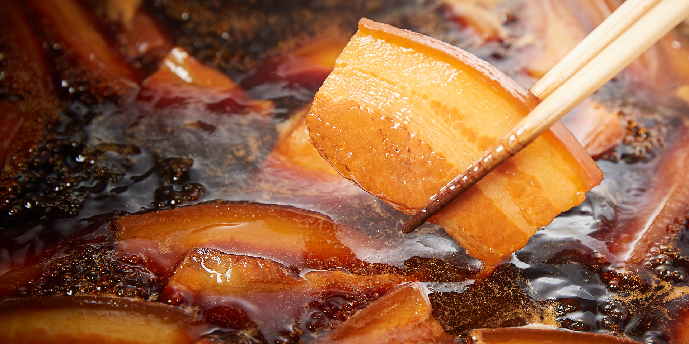
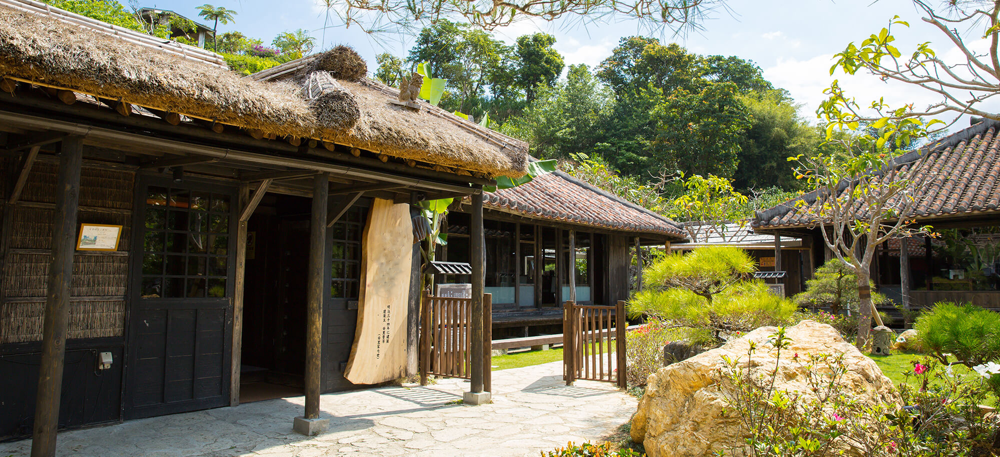

沖縄そばシーサーは昭和５８年に沖縄の青い海を眺めながら
ゆっくりとこだわりの沖縄そばを楽しんで頂きたいという思いで店を開きました。

懐かしい、南の島のふるさと
縁もゆかりもない沖縄だけど、懐かしく、 ふるさとを思い出してしまう。 木の温もり、畳の感触、縁側から見る自然の風景。 これは日本人に共通する愛郷の心が思い出されてしまうからでしょうか。 どこか懐かしい。南の島のふるさと。 木の温もり、畳の感触、昔ながらの沖縄。
名物 愛され続けた味
具の仕込みは、手間隙かけて余分な脂を 取り除いています。 特に軟骨ソーキの脂の処理は他店では類を 見ない程きれいに取り除いています。 具の煮込みも時間をかけ、弱火でコト コト煮込んで脂抜きをしております。


琉球の歴史香る古民家で
青い浜辺にに溶け込む様に、赤い屋根瓦が顔を覗かせます。藁葺きのひさしをくぐり中へ入ると、沖縄の伝統的な生活空間の目の前に、海が広がります。ゆったりと自然を感じながら、自慢の沖縄そばをお楽しみください。